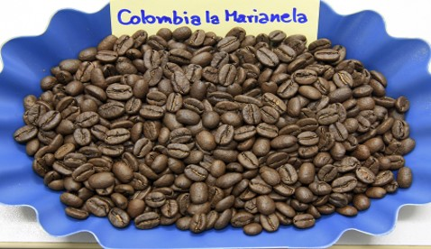
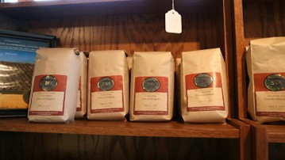

โคลัมเบีย


ผลิตกาแฟเป็นอันดับ 2 ของโลก กาแฟที่มีชื่อคือ ซูรีโมเป็นไปได้ที่ชาวคริสต์นิกายเยสุอิตจะนำกาแฟเข้ามาในโคลอมเบียในปี 1723 แต่แน่นอนว่ามันต้องมีเรื่องราวอื่นด้วย มันเริ่มกระจายตัวออกไปอย่างช้าๆ ไปยังพื้นที่ต่างๆทั่วประเทศในฐานะพืชเศรษฐกิจ แต่การผลิตกาแฟไม่ได้มีความสำคัญจนกระทั่งปลายศตวรรษที่ 19 และภายในปี 1912 กาแฟก็มีมูลค่าส่งออกกว่า 50% ของการส่งออกทั้งหมดของโคลอมเบีย